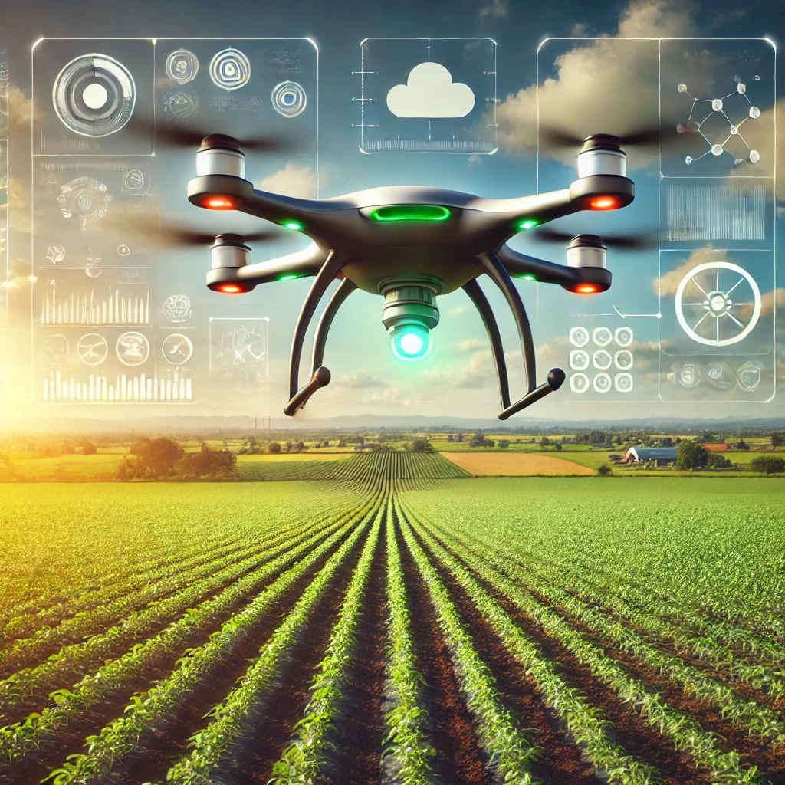

Sztuczna inteligencja w rolnictwie
Sztuczna inteligencja (AI) rewolucjonizuje rolnictwo, wprowadzając nowoczesne technologie, które pomagają zwiększyć wydajność i zrównoważony rozwój. Dzięki zaawansowanym algorytmom i analizie danych rolnicy mogą podejmować bardziej świadome decyzje, oszczędzając czas, zasoby i koszty.
Zastosowania AI w rolnictwie:
- Precyzyjne nawadnianie i nawożenie: AI analizuje warunki glebowe, pogodowe i wilgotności, aby dostarczyć roślinom dokładnie tyle wody i składników odżywczych, ile potrzebują.
- Wykrywanie chorób i szkodników: Inteligentne systemy rozpoznają objawy chorób roślin i obecność szkodników, umożliwiając szybką reakcję i ograniczenie strat w uprawach.
- Zarządzanie plonami: Drony wyposażone w AI monitorują pola, dostarczając szczegółowych danych o stanie roślin, co pozwala na planowanie zbiorów i zwiększenie efektywności.
- Autonomiczne maszyny rolnicze: Traktory i kombajny sterowane przez AI wykonują prace polowe z minimalnym udziałem człowieka, poprawiając dokładność i zmniejszając koszty pracy.
- Prognozowanie plonów: Algorytmy AI analizują historyczne dane i aktualne warunki, przewidując wielkość i jakość zbiorów.
Sztuczna inteligencja wspiera transformację rolnictwa w kierunku bardziej ekologicznego, precyzyjnego i zrównoważonego modelu, odpowiadając na potrzeby rosnącej populacji i wyzwań klimatycznych.
